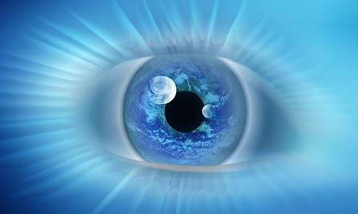

Clarividencia
La clarividencia es la habilidad de poder ver hechos, ya sea del pasado o el futuro, los cuales suelen ser acontecimientos ajenos al portador de dicho poder. Quienes poseen el don de la clarividencia pasan por experiencias extrasensoriales que les permiten revelar información por medio de imágenes, de la mente de otras personas o seres superiores. Esto está sólo en la mano de algunas videntes recomendadas y reconocidas.
Tipos de Clarividencia
- La predicción o precognición: es la capacidad que poseen algunas personas para prever los acontecimientos futuros antes de que suceden.
- La retrocognición que es lo contrario a la precognición. Se trata de un sujeto que tiene conocimiento de un acontecimiento o hecho pasado a través de medios naturales.
- Visión remota: es la capacidad única de predecir los acontecimientos contemporáneos que se producen en los alrededores humanos y que están fuera de su percepción.
- Clarividencia espiritual: es la capacidad que te permite contactar con los espíritus encarnados o no, e incluso con diversos médiums e espiritistas.
- Clarividencia astral: quienes la tienen son personas capaces de reconocer y obtener información de los seres que habitan en el plano astral.
Otra clasificacion es según la voluntad del clarividente
- Positiva: la clarividencia se produce cuando el médium es capaz de ver más allá de manera voluntaria.
- Negativa: la clarividencia se produce cuando la persona dueña de los dones no es capaz de controlar los sueños, imágenes o predicciones. Esa incapacidad genera angustia y frustración por no poder evitar todas esas cosas que han ocurrido o van ocurrir en un futuro muy cercano.
